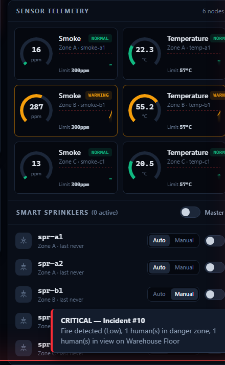
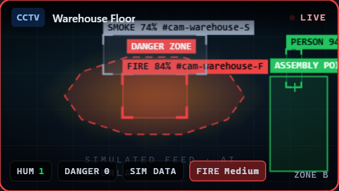
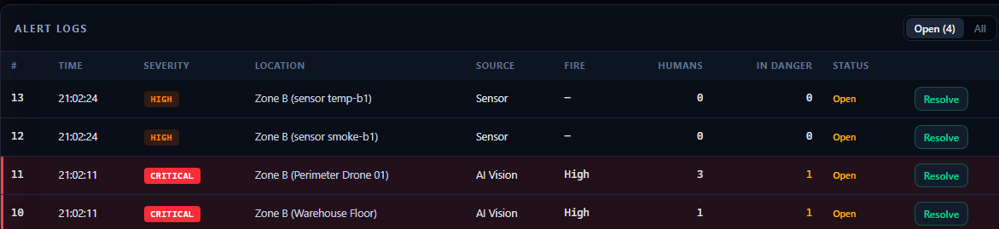
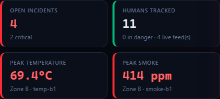
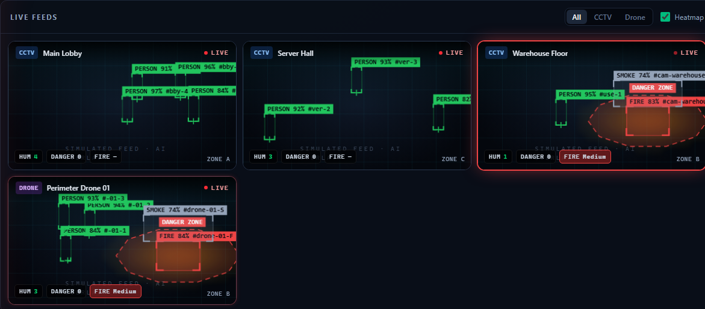
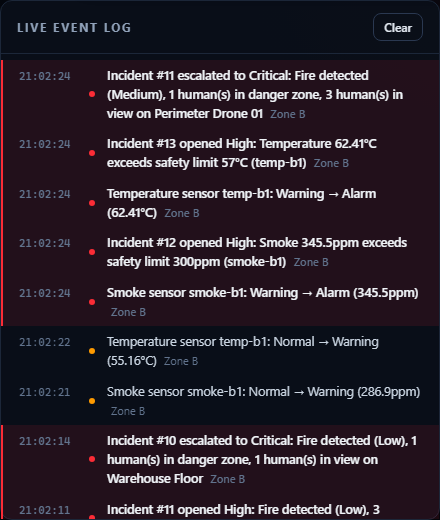

SENTINEL
Fire & Emergency Monitoring System: poore project ka flow shuru se aakhir tak (camera → AI → API → database → dashboard), aur AI models ki har detail: model kahan se aaya, dataset kaun sa, kitni tasveerein, kitne epochs, aur asli accuracy.
A · Taaruf aur poora flow
1. Sentinel Kya Hai?
Ek line mein: Sentinel ek fire-safety control room software hai. Ye building ke cameras (CCTV aur drone), dhuwen/garmi ke sensors aur smart sprinklers ko ek screen par jorta hai. AI camera mein aag, dhuwan aur insaan pehchaanta hai. Khatra ho to system khud:
- screen par alarm aur alert dikhata hai,
- SMS, Email aur browser Push notification bhejta hai,
- us zone ke sprinklers chala sakta hai,
- har waqia ka log rakhta hai,
- building ke naqshe par mehfooz raasta aur bahar nikalne ka andazan waqt batata hai.
Asal zindagi ki misaal
Ek factory ka security room sochiye: deewar par TV screens, aur ek guard jo sab dekh raha hai. Sentinel us guard ka computer version hai:
| Asal duniya | Sentinel mein |
|---|---|
| CCTV ki screen | Dashboard ki Video Wall (Angular) |
| Guard ki aankh jo aag pehchaanti hai | AI Service (Python, YOLOX models) |
| Guard ka dimagh: "kitna khatarnak hai?" | AlertEngine.cs (backend) |
| Guard ki notebook | SQL Server ke IncidentAlerts aur IncidentLogs tables |
| Guard ka phone | NotificationWorker: Twilio SMS, Email, Web Push |
| Sprinkler ka switch | SprinklerService.cs + SmartSprinklers table |
| Radio jis se sab ko foran khabar milti hai | SignalR (live connection) |
| Building ka naqsha deewar par | Floor Plans editor + Evacuation route |
Zaroori alfaaz (aasan matlab)
| Lafz | Matlab |
|---|---|
| API | Backend ka "darwaza" jahan request aati hai, jaise POST /api/detections |
| SignalR | Hamesha khula live connection. Server browser ko khud data bhej deta hai, page refresh ki zaroorat nahi |
| JWT token | Login ke baad milne wala "digital pass", har request ke saath jata hai |
| Device Key | Machines (AI service, sensors, simulator) ka password, header X-Device-Key |
| Incident | Ek khatre ka waqia (aag, dhuwan, khatre mein insaan, sensor alarm) |
| Severity | Khatre ka darja: Low < Medium < High < Critical |
| AI model | Training se seekha hua program jo tasveer mein cheezein pehchaanta hai |
| Dataset | Labels wali tasveeron ka majmua jis se model seekhta hai |
| Epoch | Training mein poore dataset par ek chakkar |
| ONNX | AI model ki file ka format jo bina PyTorch ke CPU par chalta hai |
| Simulated | Asli nahi, test data. Aisi har cheez par SIMULATED label lagta hai |
⚠️ Imandari ki baat: sab kuch software aur lab mein test hua hai. Asli CCTV camera, asli SMS/Email aur asli sprinkler hardware ke saath test nahi hua. Is liye ye system abhi asli emergency ke liye "production-safe" nahi kaha ja sakta. Smoke detectors, fire panel aur insaani nigrani zaroori hain.
2. Poora System Ek Nazar Mein
┌────────────────────┐ frames ┌──────────────────────────┐
│ Camera / video file│ ──────────► │ AI SERVICE (Python) │
└────────────────────┘ │ port 8008 · YOLOX · CPU │
┌────────────────────┐ └────────────┬─────────────┘
│ Simulator (.NET) │ ─── nakli frames/sensors ─┤ POST /api/detections
│ IoT sensors │ │ (X-Device-Key)
└────────────────────┘ ▼
┌────────────────────────────────────────────────────────────────┐
│ ASP.NET CORE 8 WEB API (port 5291) │
│ Controllers → Services: DetectionService, AlertEngine, │
│ SensorService, SprinklerService, FloorPlanService, │
│ EvacuationRouter, NotificationWorker → SMS / Email / Push │
└───────┬─────────────────────────────────────┬──────────────────┘
│ EF Core │ SignalR /hubs/monitoring
▼ ▼
┌──────────────────┐ ┌──────────────────────────────┐
│ SQL SERVER │ │ ANGULAR 22 DASHBOARD (4200) │
│ SentinelDb │ │ Dashboard · Floor Plans · AI │
└──────────────────┘ └──────────────────────────────┘
| Hissa | Technology | Folder | Port |
|---|---|---|---|
| Frontend | Angular 22, TypeScript, Tailwind CSS 4, Canvas, hls.js | frontend/ |
4200 |
| Backend | ASP.NET Core 8 Web API (C#), SignalR, EF Core 8 | backend/Sentinel.Api/ |
5291 |
| Database | Microsoft SQL Server, EF migrations | backend/Sentinel.Api/Migrations/ |
1433 |
| AI Service | Python 3.13, ONNX Runtime (CPU), OpenCV, NumPy | ai-service/ |
8008 (sirf 127.0.0.1) |
| Simulator | .NET console: nakli sensors, sprinklers aur AI frames | backend/Sentinel.Simulator/ |
— |
| Notifications | Twilio SMS, SMTP Email (MailKit), Web Push (VAPID) | backend/Sentinel.Api/Services/Notifications/ |
— |
| Tests | xUnit, Vitest, Python unittest | backend/Sentinel.Api.Tests/, frontend/src/**/*.spec.ts, ai-service/tests/ |
— |
Tabaqay (layers): Angular Component → Angular Service → HTTP (JWT) → Controller → Service → EF Core → SQL Server.
Waiter aur chef ki misaal: Controller "waiter" hai jo order leta hai. Service "chef" hai jo asal kaam karti hai. EF Core "translator" hai jo C# ko SQL mein badalta hai.
3. Poora Flow: Camera Se Screen Tak
Misaal: warehouse ke camera mein aag lagi
1. Camera frame → AI Service (sentinel_ai) har second 1–4 frame leta hai
2. AI Service → person + fire/smoke model chalata hai, boxes nikalta hai
3. Tracking → har cheez ko track id (F11, S2, P3)
4. Confirmation → wohi aag 3 frames mein dikhi? tab hi report
5. Severity → aag ke boxes frame ka kitna % → Low/Medium/High/Critical
6. AI danger zone → aag ke gird 25% bara laal zone
7. POST /api/detections → API (X-Device-Key ke saath)
8. DetectionPayloadValidator → JSON ki jaanch + insaan danger zone mein? (backend khud hisaab)
9. RealtimeNotifier → SignalR "detection" → sab dashboards par boxes
10. AlertEngine → incident banao/barhao (dedupe ke saath)
11. IncidentLogs → Opened, FireMeasurement, PersonInDanger
12. Emergency? → SMS/Email/Push queue + Auto sprinklers (simulated data par nahi)
13. SignalR → "incident", "incidentLog", "activity" → dashboard update
14. Evacuation panel → us zone ka danger zone active → naya mehfooz raasta
15. Calibrated camera → camera mein dikha insaan naqshe par amber nuqta (Chapter 9)
Bina refresh ke kaise? Browser aur server ke darmiyan SignalR connection hamesha khula rehta hai. Server naya data milte hi sab browsers ko bhej deta hai. Canvas har animation frame (~60 dafa per second) par dobara draw hota hai.
Detection do raaston se aa sakti hai:
- REST:
POST /api/detections(AI service yehi use karti hai). - SignalR: hub method
PublishDetection(payload)(simulator). Hub par 60 messages per second ki had hai.
B · Backend
4. Alert Engine: Incident Kaise Banta Hai
File: backend/Sentinel.Api/Services/AlertEngine.cs
Severity (khatre ka darja)
| Halat | Severity |
|---|---|
| Sirf dhuwan (aag nahi) | Medium |
| Aag | AI ki fireSeverity (na ho to Medium) |
| Aag + koi insaan nazar aaye | Kam az kam High |
| 1–2 insaan danger zone mein | High |
| 3 ya zyada insaan danger zone mein | Critical |
| Aag + koi insaan danger zone mein | Critical |
Emergency ka rule
Emergency = DangerCount > 0 YA aag ki severity Critical YA incident Critical
Emergency par do kaam khud hote hain:
- SMS + Email + Push notification queue mein.
- Us zone ke Auto mode sprinklers ON. Lekin agar data SIMULATED hai to sprinkler nahi chalte (
Alerts:AutoSprinklerOnSimulatedData = false), sirf log likha jata hai.
Duplicate se bachao
| Tareeqa | Kya karta hai | Setting |
|---|---|---|
| Merge window | Same source ka khula incident 90 second mein dobara aaye to naya nahi, wohi update | IncidentMergeWindowSeconds = 90 |
| Escalation | Severity sirf barhti hai, kam nahi hoti | — |
| Vision throttle | Ek camera ka database check har 2 second mein ek dafa (severity barhe to foran) | VisionEvaluationIntervalSeconds = 2 |
| Cooldown | Same source + zone + severity par 120 second tak dobara SMS nahi | CooldownSeconds = 120 |
| Lock | Do frames ek saath aayein to bhi ek hi incident | IncidentLocks |
5. Sensors Aur Smart Sprinklers
Sensors (dhuwan ppm, garmi °C)
File: Services/SensorRules.cs
| Halat | Shart (misaal: temperature threshold 57°C) | Kya hota hai |
|---|---|---|
| Normal | 45.6°C se kam | Kuch nahi |
| Warning | ≥ threshold × 0.8 | Peela rang |
| Alarm | ≥ threshold | High incident + zone ke Auto sprinklers |
| Critical | ≥ threshold × 1.25 (smoke × 1.5) | Critical incident + emergency notifications + sprinklers |
- Readings
SensorReadingstable mein, 48 ghante se purani khud delete. - Dashboard par gauge aur chhota graph (sparkline), aakhri 60 readings.
Smart sprinklers
- Har sprinkler ka ek zone hai (Zone A/B/C).
- Auto mode: Alert engine khud ON kar sakta hai.
- Manual mode: sirf operator ON/OFF karta hai.
- Master switch: saare sprinklers ek click mein, pehle confirm dialog.
- Sprinkler khud OFF nahi hota. Aag bujhne ke baad operator OFF karta hai.

⚠️ Is project mein sprinklers simulated hain (database ki entries). Koi asli hardware nahi joda gaya.
6. Notifications (SMS, Email, Push)
AlertEngine ──Enqueue──► NotificationDispatcher (queue + cooldown, foran wapas)
▼
NotificationWorker (background thread)
├─► TwilioSmsChannel → SMS
├─► EmailChannel → Email (MailKit / SMTP)
└─► WebPushChannel → Browser push
▼
SignalR "notification" → Live Event Log mein natija
- Background mein kyun? SMS/Email mein 2–5 second lag sakte hain. Request ke andar hota to live video atak jati.
- Kab jati hain? Sirf emergency par, ya jab operator Emergency Dispatch dabaye.
- Setting na ho to? Channel "skipped (not configured)" likhta hai, crash nahi.
- Email console mode: SMTP host khali ho aur recipients hon to email API ki terminal mein print hota hai.
- Credentials
.envmein (git se bahar)..env.examplemein sirf namuna.
⚠️ Is computer ki
.envmein asli Twilio/SMTP credentials hain, lekin asli SMS/Email bhej kar test nahi kiya gaya.
7. Danger Zone, Safe Zone Aur Insaan Ki Hifazat
Danger zone person check (backend khud karta hai)
File: Validators/DetectionPayloadValidator.cs
- Har insaan ke box ka pair ka point:
x + width/2, y + height(box ka neeche beech). - Ye point kisi Danger ya Critical zone polygon ke andar hai? (ray-casting). Warning aur Safe zones nahi gine jaate.
- Haan →
AtRisk = true, zone ka naam, aurDangerCountbarhta hai. Backend kabhi AI se kam nahi ginta. - Har (incident, insaan, zone) ka sirf ek
PersonInDangerlog.
Danger zones kahan se aate hain
- AI: har confirmed aag ke box ko 25% bara karke "AI fire area" zone.
- Camera config:
ai-service/config.jsonmein har camera ke fixed zones (misaal "Fuel store"). - Naqsha: Floor plan ke danger zones (Chapter 9).
Safe zones (hare rang)
Mehfooz ilaqe (assembly point) hare, solid line. Danger zones laal, dashed aur dhadakte hue.

Boxes ke rang
| Cheez | Rang |
|---|---|
| Aag | Laal, dhadakta |
| Dhuwan | Gray |
| Insaan (mehfooz) | Hara |
| Insaan danger zone mein | Amber, "IN DANGER" |
| Heatmap | Peela → laal |
AI 1.5 second tak data na bheje to tile par "NO AI DATA". 4.5 second baad boxes gayab.
8. Fire Growth History Aur Logs
Aag ki naap (graph)
FireAreaPercent = (saare Fire boxes ka width × height ka jama) ÷ (frame ki width × height) × 100
- Camera incident: AI fire area % ka graph. Sensor incident: sensor readings ka graph.
- Graph par likha hai "not a physical fire size": ye screen par hissa hai, meters nahi.

Logs (IncidentLogs table)
| Type | Kab |
|---|---|
Opened |
Naya incident |
Escalated |
Darja barha |
Resolved |
Operator ne Resolve dabaya |
FireMeasurement |
Aag ki naap badli |
PersonInDanger |
Insaan danger zone mein |
EvacuationRoute |
Raasta nikala gaya ("ESTIMATE") |
Har log mein Simulated column. Dashboard par SIMULATED (jamni) aur ESTIMATE (neela) labels. Naya log SignalR incidentLog se foran screen par.

9. Floor Plans, Evacuation Raasta Aur Waqt
Naqsha banana (Floor Plans page)

| Tool | Kaam |
|---|---|
| + Room / + Corridor | Chalne ki jagah |
| + Wall | Deewar (0.2 m moti) |
| + Door | Darwaza (deewar par). "Blocked" = band |
| + Exit | Emergency exit |
| + Safe zone / + Danger zone | Mehfooz / khatarnak ilaqa. Danger zone ko camera zone (jaise Zone B) se jor sakte hain |
- Apne naqshe ki PNG/JPG background mein upload kar sakte hain (5 MB tak, file ke andar ke bytes check hote hain).
- Tasveer sirf background hai. System tasveer se deewarein khud nahi pehchaanta.
- Har cheez meters mein, 0.1 m par snap. Backend 2,000 elements tak, ghalti par 400 aur saaf message.
Raasta kaise nikalta hai (EvacuationRouter.cs)
- Naqsha 0.5 m ke khanon (grid) mein. Bari building par khana bara (max ~200,000 khane).
- Chal sakte hain: khule Room/Corridor/Door/Exit/SafeZone. Band: deewar, band darwaza, active danger zone.
- Danger zone active hai jab "Active now" tick ho, ya us ke linked zone mein khula incident ho.
- Dijkstra (8 simtein): qareeb tareen pohanch-sakne-wala khula exit.
- 1 m clearance: danger zone se 1 m ke andar wale khane mehngay. Koi raasta 1 m door na reh sake to saaf warning: "CLEARANCE VIOLATED".
- Insaan khud danger zone ke andar ho to bahar nikalne ki ijazat, message "leave immediately".
Waqt (ETA)
Andazan waqt = faasla (m) ÷ 1.2 m/s misaal: 26.9 m ÷ 1.2 = ~22 s
Dhuwan, bheer, seedhiyan shamil nahi. Is liye screen par "estimate" likha hai.
| Aag se pehle | Zone B mein aag ke baad |
|---|---|
 |
 |
Camera ko naqshe se jorna (calibration / homography)
Masla: camera tasveer ko pixels mein dekhta hai, naqsha meters mein hai. Pehle system ko pata nahi tha ke camera mein dikha insaan naqshe par kahan hai, is liye operator ko haath se click karna padta tha.
Hal: har camera ke liye 4 jodiyan: farsh ke 4 kone camera ki tasveer mein kahan hain (pixels) aur naqshe par kahan hain (meters). In se ek 3×3 hisaab (homography) banta hai jo tasveer ka har farsh wala pixel naqshe ke meter mein badal deta hai. Bilkul jaise mobile ka document scanner tirchi photo ko seedha kar deta hai.
Kaise lagayein (Floor Plans page → Camera calibration):
- Naqsha kholein aur pehle Save karein.
- Camera chunein.
- Har point ke liye Camera px (x, y) likhein. Camera ki ek snapshot Paint mein kholein, kone par mouse rakhein, Paint neeche x, y dikhata hai.
- Plan m likhein, ya Plan m ⌖ dabayein aur naqshe par wohi kona click karein.
- Save calibration. Hatana ho to Remove.

Is ke baad: dashboard ke Evacuation panel mein us camera ke har insaan ka amber nuqta naqshe par aata hai (insaan ke pairon ka point: box ka neeche beech). Kisi nuqte par click karein to raasta usi insaan ki jagah se nikalta hai.

| Cheez | Tafseel |
|---|---|
| Save kahan | CameraFeeds.Calibration column (JSON), migration CameraCalibration |
| API | PUT /api/cameras/{id}/calibration (save), DELETE /api/cameras/{id}/calibration (hatana) |
| Jaanch (backend) | Plan maujood ho, 4 points, naqshe ke andar, aur koi 3 points ek line mein na hon (warna 400) |
| Hisaab kahan | Browser mein: frontend/src/app/shared/utils/homography.ts (har frame par, server par bojh nahi) |
| Nuqta kab gayab | Camera se 4.5 second tak frame na aaye |
⚠️ Hadein: - Sirf farsh ke liye sahi hai, is liye pairon ka point. Seedhi ya mezzanine par khade insaan ki jagah ghalat ho sakti hai. - Camera hila to calibration dobara karni hogi. - Fish-eye/wide lens mein kinare mude hote hain, wahan andaza kam sahi. - Ek insaan do cameras mein dikhe to do nuqte. - Nuqta andaza hai (kuch decimeter tak farq), GPS nahi. - Raasta khud tab nikalta hai jab nuqte par click karein; har insaan ka raasta bina click ke nahi. - Calibration save karne par sirf usi browser ki list update hoti hai; doosre khule dashboards reload ke baad dekhte hain. - Asli camera ke saath abhi test nahi hua: simulator ke nakli insaanon par check kiya.
10. Database (SQL Server: SentinelDb)
CameraFeeds ─┐ FloorPlans ──1──* FloorPlanElements
SensorNodes ─┼──► IncidentAlerts ──1──* IncidentLogs
└──1──* SensorReadings
SmartSprinklers Users ──1──* PushSubscriptions
| Table | Kya rakhta hai |
|---|---|
CameraFeeds |
Camera: id (cam-warehouse), naam, CCTV/Drone, stream URL, zone, naqshe se jor (Calibration) |
SensorNodes / SensorReadings |
Sensor aur us ki readings ki history |
SmartSprinklers |
Sprinkler: zone, ON/OFF, Auto/Manual |
IncidentAlerts |
Incident: waqt, camera/sensor, zone, severity, aag, insaan, resolve |
IncidentLogs |
Har incident ki history (Chapter 8) |
FloorPlans / FloorPlanElements |
Naqshe aur un ke rooms, deewarein, exits, zones |
Users / PushSubscriptions |
Login users aur browser push |
- Teen migrations:
InitialCreate,FloorPlansAndIncidentLogs,CameraCalibration(cameras ka naqshe se jor). - Waqt UTC mein save, browser local time dikhata hai.
- Demo data (Development): 4 cameras (
cam-lobbyZone A,cam-warehouseZone B,cam-serverZone C,drone-01Zone B), 6 sensors, 5 sprinklers.
11. Hifazat (Security)
| Cheez | Kaise |
|---|---|
| Operator login | JWT token (8 ghante), password hash |
| Machines | X-Device-Key header |
| Roles | Operator (dashboard), Device (sensors/AI), OperatorOrDevice |
| Secrets | .env mein, .git/info/exclude se git se bahar |
| SignalR | 60 messages/second ki had |
| Uploads | Sirf PNG/JPG, bytes check, 5 MB, server ka apna file naam |
| AI service | Sirf 127.0.0.1 par, bahar se nahi jur sakta |
| AI model files | sha256 check. File badli ho to load nahi hoti |
| Training checkpoints | weights_only=True: sirf numbers khulte hain, koi code nahi chalta |
| Errors | Har ghalti saaf JSON (400/401/404/500) |
C · Dashboard
12. Dashboard (Website) Ki Screens

Top bar: system ka haal, Live/Offline, ghari, awaaz band, Enable Alerts (browser push), Emergency Dispatch, Logout. Menu: Dashboard · Floor Plans · AI.

| Hissa | Kaam |
|---|---|
| KPI strip | Khule incidents, ginay gaye insaan, sab se zyada garmi aur dhuwan |
| Video Wall | Saare cameras, CCTV/Drone filter, heatmap on/off, click = bara |
| Video tile | Live video + AI boxes, zones, heatmap. Chips: SIM DATA, NO AI DATA |
| Sensor panel | Gauges, graph, sprinkler switches, Auto/Manual, Master |
| Alert logs | Khule incidents, Resolve button |
| Live Event Log | SMS gaya, sprinkler chala, waghera |
| Incident History | Graph + logs, filters |
| Evacuation panel | Naqsha, click karke raasta aur ETA, safe zones ki list, calibrated cameras ke insaan (amber nuqte) |
| Floor Plans page | Naqsha editor (Chapter 9) |
| AI page | Models ka haal + test photo (Chapter 20) |




D · AI models
13. AI Service: Kya Hai Aur Kaise Kaam Karta Hai
Kya hai? ai-service/ ek alag Python program hai jo camera ki tasveer par AI models chalata hai aur nateeja API ko bhejta hai.
Alag kyun? CPU par ek tasveer 150–450 ms leti hai. API ke andar hota to API slow ho jati. Alag hone se API tez rehti hai, aur AI band ho to baaki system chalta rehta hai.
| Cheez | Value |
|---|---|
| Zubaan | Python 3.13 |
| Libraries | numpy 2.5.4, opencv-python-headless 5.0.0.93, onnxruntime 1.31.0 (bas yehi teen) |
| Hardware | Sirf CPU. Purane Intel Xeon W3520 (bina AVX) par chal kar check kiya. ~0.5 GB RAM |
| Port | 127.0.0.1:8008 |
| Endpoints | GET /health (models ka haal), POST /infer?cameraId=… (ek tasveer, max 8 MB) |
Har frame par kya hota hai (pipeline)
| # | Qadam | Tafseel |
|---|---|---|
| 1 | Letterbox | Tasveer bina khinche 416×416 mein fit |
| 2 | Models | Person model + fire/smoke model |
| 3 | Filter + NMS | Threshold se kam hatao. Ek cheez par kai boxes hon to sabse acha |
| 4 | Tracking | Pichle frame se 30%+ overlap = wohi track id. 5 se zyada frames gayab = track khatam |
| 5 | Confirmation | Aag/dhuwan 3 frames mein dikhe tab report. Insaan foran |
| 6 | Severity | Aag ka frame mein area %: 2% se kam Low, 2–10% Medium, 10–25% High, 25%+ Critical |
| 7 | AI danger zone | Aag ka box har taraf 25% bara |
| 8 | Heatmap | 16×9 khane, har frame 0.8 se thanda. Sirf "kahan dikha", prediction nahi |
| 9 | Explanation | Misaal: fire 0.83 >= threshold 0.40; box 3.1% of frame; confirmed: track F11 seen 3/4 frames |
| 10 | Bhejna | POST /api/detections + X-Device-Key |
Simulated: video file se aaya data hamesha simulated: true. Live camera (RTSP) par aap khud batate hain.
14. AI Model 1: Person (Insaan) Model
| Sawal | Jawab |
|---|---|
| Model | YOLOX-Tiny (object detection) |
| Kis ne banaya | Megvii (company) ki research team, open-source project "YOLOX" |
| Kahan se liya | Official GitHub release: github.com/Megvii-BaseDetection/YOLOX/releases/tag/0.1.1rc0, file yolox_tiny.onnx |
| Kis par trained | COCO dataset (Microsoft COCO, ~118,000 training images, 80 qisam ki cheezein) |
| Humne kya kiya | Khud train nahi kiya. Official model jaisa hai waisa liya. 80 classes mein se sirf person istemaal |
| License | Apache-2.0 (free, commercial bhi) |
| Input | 416 × 416 pixel |
| Threshold | 0.45 |
| File / size | ai-service/models/yolox_tiny.onnx, ~20 MB |
| sha256 | 427cc366d34e27ff7a03e2899b5e3671425c262ea2291f88bb942bc1cc70b0f7 |
| Download | tools/download_models.py official link se, sha256 check ke saath |
Test: Penn-Fudan dataset
| Cheez | Value |
|---|---|
| Dataset | Penn-Fudan Pedestrian Database (University of Pennsylvania), cis.upenn.edu/~jshi/ped_html/ |
| Size | 170 tasveerein, hamare evaluation mein 423 insaan ke boxes |
| Kami | Har tasveer mein insaan hain, is liye "khali scene" par galti nahi napi gayi |
| Threshold | Precision | Recall | F1 |
|---|---|---|---|
| 0.25 | 0.618 | 0.993 | 0.762 |
| 0.35 | 0.663 | 0.993 | 0.795 |
| 0.45 (laga hua) | 0.707 | 0.993 | 0.826 |
| 0.55 | 0.758 | 0.991 | 0.859 |
- Recall 0.993: 423 mein se 420 insaan pakde ✅ (shart ≥ 0.85).
- Speed: p95 139 ms ✅.
- Precision 0.707 (shart ≥ 0.80): "galat" boxes aankh se dekhe gaye. Zyada tar asli insaan the (cycle wale, peeche khade) jin par Penn-Fudan ne label nahi lagaya. Phir bhi 0.80 pakka nahi.
- Faisla: improvement required. Agla qadam: poore label wala dataset (COCO val2017 ya site CCTV).
15. AI Model 2: Fire/Smoke (Aag/Dhuwan) Model: Kya Aur Kahan Se
Khud train kyun karna para?
- Person model (COCO) mein aag ya dhuwen ki class hai hi nahi.
- Koi official, free license wala, tayyar fire/smoke ONNX model nahi mila.
- D-Fire walon ke apne YOLOv5 weights hain, lekin wo
.ptpickle hain (khulte waqt code chal sakta hai) aur YOLOv5 ka license AGPL-3.0 hai. Is liye nahi liye.
Model ki pehchaan
| Sawal | Jawab |
|---|---|
| Model | YOLOX-Tiny (wohi design jo person model ka), depth 0.33, width 0.375 |
| Shuru ka model (base) | Official COCO pretrained yolox_tiny.pth, Megvii release 0.1.1rc0 |
| Base ka sha256 | 9de513de589ac98bb92d3bca53b5af7b9acfa9b0bacb831f7999d0f7afaee8f0 |
| Tareeqa | Fine-tuning: COCO par seekha hua model aag/dhuwan ke liye dobara sikhaya |
| Training code | YOLOX 0.3.0 (github.com/Megvii-BaseDetection/YOLOX), Apache-2.0 |
| Classes | 2: 0 = smoke (dhuwan), 1 = fire (aag) |
| Input | 416 × 416 pixel |
| Threshold | 0.40 |
| Natija file | ai-service/models/fire_smoke_yolox.onnx, ~20 MB |
| sha256 | 8d73df91dbb0241cfb04cacf529a8be4b26e68d4fccbb20cd816884bfa914d73 |
| License | YOLOX code Apache-2.0 + D-Fire data CC0 |
16. Dataset: D-Fire (Kahan Se, Kitni Images)
| Sawal | Jawab |
|---|---|
| Naam | D-Fire: An image dataset for fire and smoke detection |
| Kahan se | github.com/gaiasd/DFireDataset (official OneDrive link) |
| Banane wale | Pedro de Venâncio, Adriano Lisboa, Adriano Barbosa (Brazil). Paper: Neural Computing and Applications, 2022 |
| License | CC0 1.0 (public domain, bilkul free) |
| File | D-Fire.zip, 3,036,222,313 bytes (~3 GB) |
| sha256 | 3824fb3ce32cfa8b538792dfd460603648d271072ac6ae34f1af0c713f60260c |
| Label format | YOLO: har tasveer ki .txt file, har line = class cx cy w h |
| Kul tasveerein | 21,527 (train 17,221 + test 4,306) |
Tasveeron ki ginti (humne khud gini)
| Hissa | Tasveerein | Bina aag/dhuwen | Aag wali | Dhuwen wali | Aag ke boxes | Dhuwen ke boxes |
|---|---|---|---|---|---|---|
| Official TRAIN (poora) | 17,221 | 7,833 | 4,707 | 8,444 | 11,814 | 9,550 |
| → Training (85%) | 14,621 | 7,123 | 3,696 | 6,755 | 9,125 | 7,577 |
| → Validation (15%) | 2,600 | 710 | 1,011 | 1,689 | 2,689 | 1,973 |
| Official TEST | 4,306 | 2,005 | 1,115 | 2,081 | 2,878 | 2,315 |
(Ek tasveer mein aag aur dhuwan dono ho sakte hain, is liye columns ka jama tasveeron se zyada hai.)
Data ki jaanch aur bantwara (tools/prepare_dataset.py)
- Har tasveer khol kar dekhi, labels ki range check ki.
- Train aur test mein ek bhi same tasveer nahi (leakage nahi).
- 26 khali (zero-area) labels hata kar gine gaye.
- Validation official TRAIN mein se nikali: file naam ke groups (100 lagatar frames ka ek group, kul 174 groups → 148 training, 26 validation), seed 42. Is se ek hi jagah ki milti julti tasveerein dono taraf nahi jaatin.
- TEST set training mein kabhi use nahi hua. Sirf aakhri score ke liye.
17. Training: Kahan, Kaise, Kitne Epochs
Pehli koshish: is computer par CPU pilot (fail)
| Cheez | Value |
|---|---|
| Hardware | Intel Xeon W3520 (bina AVX), GPU kaam ka nahi (Quadro FX 380, 256 MB) |
| Andaza | YOLOX-Tiny 80 epochs = ~13.6 din (0.867 s per image) |
| Pilot | YOLOX-Nano @ 320, 4,000 training + 800 validation tasveerein, 4 epochs (lr 0.01, backbone frozen) |
| Natija | Aag recall 0.000: kuch nahi pakda. Install nahi kiya |
Asal training: Kaggle GPU par
| Cheez | Value |
|---|---|
| Jagah | Kaggle (Google ki free cloud), notebook "Sentinel", Version 1 ("Save & Run All") |
| GPU | NVIDIA Tesla T4 |
| Tareekh | 14 October 2026 |
| Notebook | ai-service/training/train_fire_smoke_colab.ipynb |
| Settings file | ai-service/training/yolox_tiny_dfire.py |
| Training tasveerein | 14,621 |
| Validation tasveerein | 2,600 |
| Epochs | 80 |
| Batch size | 32 tasveerein ek saath |
| Steps per epoch | 457 (14,621 ÷ 32) |
| Kul steps | 36,560 (457 × 80) |
| Speed | ~0.45 second per step, ~3.5 minute per epoch |
| Kul waqt | ~4 ghante 39 minute |
| Precision | fp16 (mixed precision, tez) |
| Augmentation | Mosaic (scale 0.5–1.5), random size (320–640), aakhri 10 epochs bina augmentation, mixup band |
| Validation | Har 5 epoch baad. Best = sab se acha validation AP |
| Loss | 13.3 (shuru) → ~5.5 (epoch 2 tak) |
| Best validation | AP50:95 = 0.359, epoch 80 par |
| Best checkpoint | best_ckpt.pth, 40.58 MB, sha256 df57126a47872a8e3899486d1d2ff45962d28a7257363a522dcc1e9c99d32ffc |
Ek masla aur us ka hal
- Training poori hui, lekin notebook ka "export" cell fail hua: YOLOX 0.3.0 ka export
torch.onnx._exportuse karta hai jo naye PyTorch mein nahi. - Checkpoints Kaggle Output mein mehfooz the.
best_ckpt.pthdownload kiya. - Apna script
ai-service/training/export_onnx.pybanaya:torch.load(weights_only=True): sirf numbers khulte hain, koi code nahi chalta. Sirf numpy ka number type allow (YOLOXbest_apusi mein rakhta hai).torch.onnx.export(opset 11) →fire_smoke_yolox.onnx→ sha256models.jsonmein.
cd ai-service\training
python export_onnx.py --exp yolox_tiny_dfire.py --ckpt best_ckpt.pth --out ..\models\fire_smoke_yolox.onnx
18. Accuracy: Asli Numbers
Lafzon ka matlab
| Lafz | Matlab |
|---|---|
| Recall | Jitni aag thi us mein se kitni pakdi. 0.93 = 100 mein se 93 |
| Precision | Model ke boxes mein se kitne sahi |
| FPR (galat alarm) | Bina aag wali tasveeron mein se kitni par galti se aag |
| Image-level | Poori tasveer: aag hai ya nahi |
| Box-level | Har shola/dhuwan sahi jagah par (IoU ≥ 0.5) |
| AP50:95 | Training ka mila jula score (box kitna theek baitha) |
Pass hone ki shartein
| Class | Shart |
|---|---|
| Fire | Image recall ≥ 0.90 aur FPR ≤ 0.10 |
| Smoke | Image recall ≥ 0.80, FPR ≤ 0.15 |
| Fire/Smoke boxes | Precision ≥ 0.60 |
| Person | Recall ≥ 0.85 aur precision ≥ 0.80 |
| Speed | p95 ≤ 1000 ms |
Fire/Smoke: D-Fire TEST (4,306 tasveerein, training mein kabhi nahi dekhi)
| Threshold | Fire box P / R | Fire image recall / FPR | Smoke box P / R | Smoke image recall / FPR |
|---|---|---|---|---|
| 0.25 | 0.642 / 0.697 | 0.952 / 0.011 | 0.793 / 0.798 | 0.947 / 0.039 |
| 0.30 | 0.676 / 0.682 | 0.947 / 0.009 | 0.808 / 0.791 | 0.939 / 0.034 |
| 0.35 | 0.706 / 0.668 | 0.940 / 0.007 | 0.821 / 0.784 | 0.932 / 0.032 |
| 0.40 (laga hua) | 0.731 / 0.649 | 0.932 / 0.006 | 0.833 / 0.777 | 0.923 / 0.028 |
| 0.50 | 0.783 / 0.602 | 0.904 / 0.004 | 0.856 / 0.754 | 0.891 / 0.024 |
| Shart (threshold 0.40) | Mila | |
|---|---|---|
| Fire image recall ≥ 0.90 | 0.932 (1,115 mein se 1,039) | ✅ |
| Fire galat alarm ≤ 0.10 | 0.006 (2,005 mein se 4) | ✅ |
| Smoke image recall ≥ 0.80 | 0.923 (2,081 mein se 1,920) | ✅ |
| Smoke galat alarm ≤ 0.15 | 0.028 (2,005 mein se 17) | ✅ |
| Box precision ≥ 0.60 | Fire 0.731, Smoke 0.833 | ✅ |
| Speed p95 ≤ 1000 ms | 356 ms (CPU) | ✅ |
Mushkil cases (0.40):
- Sirf dhuwan (aag nahi): 1,186 mein se 1,074 par dhuwan pakda, 15 par galti se aag.
- Chhoti aag (frame ka 1% se kam): 831 mein se 769.
- Andheri tasveerein: 229 bina aag wali mein se 2 par galat aag.
Speed (Xeon CPU): fire model akela mean 182 ms, p95 356 ms. Dono models saath ~460 ms per frame.
CPU pilot se muqabla: aag recall 0.000 → 0.932.
Faisla: meets the defined development criteria (D-Fire test par).
⚠️ Kamzoriyan: - Fire box recall 0.65: tasveer mein aag pakad leta hai, lekin har shola nahi. Severity kabhi kam aa sakti hai. - D-Fire test usi qisam ki tasveeron se hai jaisa train. Site ka CCTV, fog, steam, dust, IR test nahi. - Ye lab ke numbers hain, safety certificate nahi.
19. End-to-End Test: Poora System Ek Saath
Maqsad: model akela nahi, poora system check karna: AI service → API → database → SignalR → dashboard.
Hifazat:
- Alag test database
SentinelDb_E2E_20261015, baad mein delete. AsliSentinelDbko nahi chhua. .envload nahi ki (asli SMS/Email credentials), throwaway keys. Koi hardware nahi.- Input
e2e-fire.avi: D-Fire TEST ki 40 tasveerein ki video, cameracam-warehouse(Zone B), SIMULATED.
| Run | Kya hua |
|---|---|
| Run 1 (1 frame/second) | 10 frames, 0 detection. Detector ne har frame mein aag pakdi, lekin ye alag alag photos hain, aag ki jagah har baar badli, to 3-frame confirmation ne sahi taur par kuch report nahi kiya. Sabaq: camera ka view 3 frames tak ek jaisa hona chahiye |
| Run 2 (4 frame/second) | 40 frames, 0 failure. Incident #1: Low → Medium, "Fire detected (Medium), Smoke detected … [SIMULATED DATA]". Sirf ek incident (dedupe). 6 logs (fire 1.05% → 2.5% → 4.36% → 0.54%), sab simulated. SignalR events dashboard tak. Paanchon sprinkler band |
Test nahi hua: emergency raasta (High/Critical, danger zone mein insaan) jo notifications aur sprinklers chalata hai. Wo sirf unit tests mein.
20. AI Page (Dashboard Par)

Baen taraf, "AI inference service":
- Hara ONLINE · all models loaded / Peela degraded (koi model missing) / Laal OFFLINE.
- Har model: naam, classes, threshold, file, license. Kitni inferences, average ms.
- Camera sources: kaun se camera jure, haal, frames. File par SIMULATED / TEST INPUT.
Daen taraf, "Test image analysis":
- Choose image… (PNG/JPG, 5 MB tak).
- Asli models chalte hain, boxes tasveer par (aag laal, dhuwan gray).
- Table: class, confidence, box, "Why (evidence)".
⚠️ Sirf preview: koi incident, alert ya sprinkler nahi. Kuch na mile to iska matlab ye nahi ke jagah mehfooz hai.
APIs: GET /api/ai/status, POST /api/ai/analyze (multipart file). Errors: 503 service/model nahi, 504 timeout, 502 kharab jawab.
E · Chalana aur reference
21. Chalane Ka Tareeqa (Setup)
Pehle install: .NET 8 SDK, Node.js 20.19+ aur Angular CLI, SQL Server, dotnet-ef, Python 3.13.
.env (project folder mein, .env.example se copy)
| Key | Kaam |
|---|---|
ConnectionStrings__Sentinel |
SQL Server |
Jwt__SigningKey |
Login token ki chaabi (lambi random) |
Device__ApiKey |
Machines ki chaabi |
Seed__AdminEmail, Seed__AdminPassword |
Pehla admin |
Notifications__Sms__…, __Email__…, __WebPush__… |
Alerts (ikhtiyari) |
4 windows
# 1) Backend API → http://localhost:5291/swagger
cd <project>\backend
dotnet ef database update --project Sentinel.Api
dotnet run --project Sentinel.Api --launch-profile http
# 2) Dashboard → http://localhost:4200
cd <project>\frontend
npm install
ng serve
# 3) AI service → http://127.0.0.1:8008/health
cd <project>\ai-service
py -3.13 -m venv .venv
.\.venv\Scripts\python -m pip install -r requirements.txt
.\.venv\Scripts\python tools\download_models.py
.\.venv\Scripts\python -m sentinel_ai
# 4) (Demo) Simulator: Zone B mein aag
cd <project>\backend
dotnet run --project Sentinel.Simulator -- --device-key <Device__ApiKey> --ignite "Zone B"
Simulator ke options: --base-url, --device-key, --ignite, --fps, --fire-probability, --telemetry-interval.
AI se camera jorna (ai-service/config.json)
{
"api": "http://localhost:5291",
"cameras": [
{ "cameraId": "cam-lobby", "source": "${CAM_LOBBY_URL}", "fps": 1, "enabled": true }
]
}
source:rtsp://…(live),0(webcam) ya video file (hamesha SIMULATED).- Camera ka password environment variable mein,
SENTINEL_DEVICE_KEY=Device__ApiKey. fire_smoke_yolox.onnxgit mein nahi. Usaymodels/mein rakhna hai (Chapter 17).
⚠️ Asli camera aur asli
.envke saath aag dikhi to asli SMS/Email jayenge. Pehle safe test number/email se test karein.
22. Tests
| Hissa | Tests | Kya check |
|---|---|---|
| Backend (xUnit) | 56 | Alert rules, API + SignalR integration, evacuation router, floor plans + logs, camera calibration, AI client |
| Frontend (Vitest) | 25 | Login expiry, homography, calibrated camera ke nuqte, overlay drawing, floor plan editor, evacuation panel, AI page, formatting |
| AI service (unittest) | 15 | Box decode, NMS, kharab/badli model file rad, tracking, 3-frame confirmation, severity, adhoori settings, kharab frame ke baad camera chalta rahe, API contract, service errors, video = SIMULATED (mock: sirf logic, accuracy nahi) |
| Production build | ✅ | ng build |
| AI evaluation | Asli models | Chapter 14, 18 |
| End-to-end | Asli services | Chapter 19 |
cd backend; dotnet test
cd frontend; ng test --watch=false; ng build
cd ai-service; .\.venv\Scripts\python -m unittest discover -s tests
cd ai-service; .\.venv\Scripts\python tools\evaluate.py --data <D-Fire\test> --classes 0=Smoke,1=Fire --sweep 0.25,0.3,0.35,0.4,0.5 --out reports\fire
Sab 15 October 2026 ko pass hue.
23. API Aur SignalR Ki Poori List
| Method | Route | Kaun | Kaam |
|---|---|---|---|
| POST | /api/auth/login |
Sab | Login → JWT |
| GET | /api/auth/me |
Login | Apni maloomat |
| GET | /api/dashboard/snapshot |
Operator | Poori screen ka data |
| GET | /api/cameras, /api/cameras/{id}, /api/cameras/{id}/stream |
Operator/Device | Cameras, MJPEG stream |
| POST | /api/detections |
Operator/Device | AI frame |
| GET | /api/incidents, /api/incidents/{id} |
Operator | Incidents |
| GET | /api/incidents/logs?incidentId=&type=&limit= |
Operator | Logs |
| POST | /api/incidents/{id}/resolve |
Operator | Band karna |
| POST | /api/incidents/dispatch |
Operator | Manual emergency |
| GET | /api/iot/sensors, /sensors/{id}, /sensors/{id}/history |
Operator/Device | Sensors |
| POST | /api/iot/sensors/{id}/readings, /api/iot/telemetry |
Operator/Device | Readings |
| GET | /api/iot/sprinklers |
Operator/Device | Sprinklers |
| POST | /api/iot/sprinklers/{id}/toggle, /api/iot/sprinklers/master |
Operator/Device | ON/OFF |
| GET/POST/PUT/DELETE | /api/floorplans, /api/floorplans/{id} |
Operator | Naqshe |
| PUT/GET | /api/floorplans/{id}/image |
Operator | Naqshe ki tasveer |
| POST | /api/floorplans/{id}/route |
Operator | Evacuation raasta |
| PUT/DELETE | /api/cameras/{id}/calibration |
Operator | Camera ko naqshe se jorna / hatana |
| GET | /api/ai/status |
Operator | AI ka haal |
| POST | /api/ai/analyze |
Operator | Test photo |
| GET/POST | /api/push/vapid-public-key, /subscribe, /unsubscribe |
Operator | Browser push |
| GET | /health |
Sab | API zinda hai? |
SignalR hub /hubs/monitoring:
- Server → browser events:
snapshot,detection,telemetry,sprinkler,incident,notification,activity,incidentLog. - Device → server methods:
PublishDetection,PublishTelemetry.
24. Ahem Files
| File | Kaam |
|---|---|
backend/Sentinel.Api/Program.cs |
App ka switchboard: .env, DI, auth, CORS, SignalR, Swagger |
Services/DetectionService.cs |
Detection: validate → broadcast → evaluate |
Services/AlertEngine.cs |
Severity, incidents, emergency, logs |
Services/SensorService.cs, SensorRules.cs |
Sensor readings aur halat |
Services/SprinklerService.cs |
Sprinklers |
Services/Notifications/ |
SMS, Email, Push |
Services/FloorPlanService.cs, EvacuationRouter.cs |
Naqshe aur raasta |
Services/AiInferenceClient.cs, Controllers/AiController.cs |
API ↔ AI service |
Validators/DetectionPayloadValidator.cs |
AI JSON jaanch + danger zone person check |
Hubs/EmergencyMonitoringHub.cs |
SignalR |
frontend/src/app/core/services/signalr.service.ts |
Live data |
frontend/src/app/features/dashboard/video-feed/overlay-renderer.ts |
Boxes/zones/heatmap drawing |
frontend/src/app/features/floor-plans/ |
Naqsha editor |
frontend/src/app/features/ai/ |
AI page |
frontend/src/app/shared/utils/homography.ts |
Camera pixel → naqsha meter (4 points se) |
ai-service/sentinel_ai/detector.py |
ONNX model chalana + sha256 |
ai-service/sentinel_ai/pipeline.py, tracker.py |
Confirmation, severity, zones, heatmap, tracking |
ai-service/sentinel_ai/service.py |
HTTP server + camera workers |
ai-service/models/models.json |
Models ki list |
ai-service/tools/prepare_dataset.py, evaluate.py |
Dataset jaanch, accuracy |
ai-service/training/ |
Notebook, settings, export script |
ai-service/reports/ |
Evaluation reports (JSON) |
F · Status aur baqi kaam
25. Requirements Ka Status
Kul 26 points: ✅ 20 · ⚠️ 5 · ❌ 1
| # | Requirement | Status | Note |
|---|---|---|---|
| 1.1 | Video se aag/dhuwan | ✅ | Fire/smoke model, 93% / 92% |
| 1.2 | Boxes/heatmap dikhana | ✅ | |
| 1.3 | Mukhtalif mahol | ⚠️ | Sirf andheri photos. Fog, steam, IR nahi |
| 1.4 | Accuracy | ✅ | Chapter 18 |
| 2.1 | Insaan pehchaanna | ⚠️ | Recall 99%, precision 0.80 pakki nahi |
| 2.2 | Insaan track karna | ⚠️ | IoU tracker, bheer mein IDs badal sakti hain |
| 2.3 | Danger zone mein insaan | ✅ | Backend ka polygon check |
| 2.4 | Evacuation raasta | ✅ | Dijkstra, 1 m clearance |
| 2.5 | Khatre saaf nishaan-zada | ✅ | |
| 3.1 | Aag small/medium/large | ✅ | AI area % se |
| 3.2 | Aag ka barhna | ✅ | Graph, physical size nahi |
| 3.3 | Phailne ka prediction | ❌ | Nahi bana |
| 3.4 | Risk heatmap | ⚠️ | "Kahan dikha" heatmap, prediction nahi |
| 3.5 | Early warning | ✅ | |
| 4.1–4.4 | Alerts | ✅ | Asli bhej kar test nahi |
| 5.1 | Live video par nishaan | ✅ | Asli camera test nahi |
| 5.2 | Safe zones | ✅ | |
| 5.3 | Logs | ✅ | |
| 5.4 | Dashboard | ✅ | |
| 6.1 | Drone feeds | ✅ | |
| 6.2 | IoT/sprinkler simulation | ✅ | |
| 6.3 | Explainable AI | ⚠️ | Likhi hui wajah, visual nahi |
| 6.4 | Evacuation time | ✅ | Andaza |
26. Kya Reh Gaya (Functionality)
| # | Functionality | Abhi | Hona chahiye |
|---|---|---|---|
| 1 | Camera lost alert | Camera band ho (bijli jaye) to system chup | 30 sec frame na aaye to alert; zone mein aag ho to High |
| 2 | Asli CCTV camera | Sirf video file/photos | RTSP camera live |
| 3 | Asli alerts pahunchna | Code bana, bhej kar check nahi | Test number/email par tasdeeq |
| 4 | Aag phailne ka prediction | Nahi | Agla ilaqa batana |
| 5 | Camera ↔ naqsha | ✅ Ban gaya: calibrated camera ka insaan naqshe par nuqta, click = raasta (asli camera par test baqi) | Har insaan ka raasta bina click ke; aag ki jagah bhi naqshe par |
| 15 | Simulated sensor data | Simulator ke sensors par SIMULATED ka nishaan nahi, Alarm par Auto sprinklers chal jaate hain | Telemetry mein simulated flag |
| 6 | Tircha kamre + seedhiyan | Seedhe kamre, har floor alag | Har shakal, floors ke beech raasta |
| 7 | Smart ETA | Faasla ÷ 1.2 m/s | Bheer, dhuwan, seedhiyan |
| 8 | Raat/fog/steam AI | Sirf andheri photos check | IR/fog footage par test aur training |
| 9 | Insaan AI ki jaanch | Precision pakki nahi | Poore label wale data par test |
| 10 | Bheer mein tracking | Saada tracker | ByteTrack jaisa |
| 11 | Visual explanation | Likhi wajah | Grad-CAM |
| 12 | Severity calibration | Screen ka % | Har camera ke liye meters |
| 13 | Rescue ko raasta SMS | Nahi | Raasta SMS mein |
| 14 | Kai servers | Dedupe ek process mein | Shared lock (Redis) |
Aakhri baat
- AI madadgar hai, fire alarm ka badal nahi.
- Aag mein bijli jaye to camera band ho sakte hain: cameras UPS/PoE backup par.
- Asli fire-safety hardware ko test mein bina ijazat aur safe tareeqe ke na chalayein.
- Site par test aur certified fire-safety review ke baghair system production-safe nahi.
Kuch nahi mila. Doosra lafz try karein.